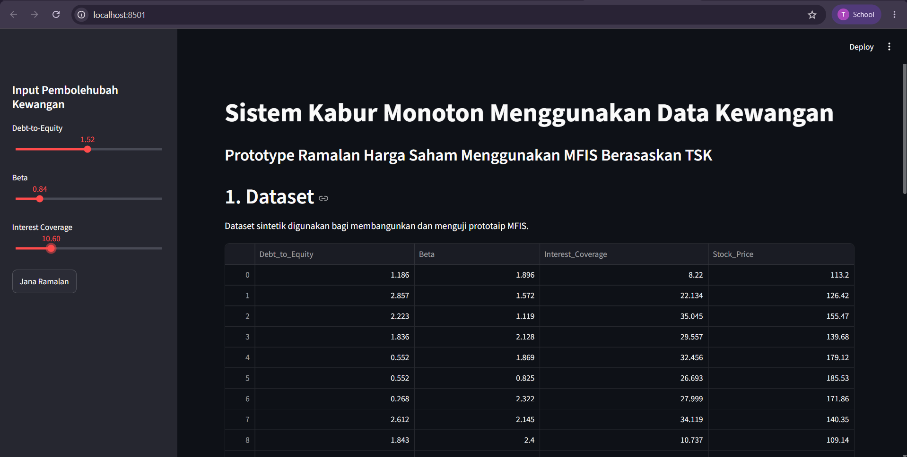

01
Data-Driven Monotone Fuzzy Systems with Financial Data
Developed a Python-based monotone TSK fuzzy inference system for financial prediction. The system performs data preprocessing, Spearman monotonicity analysis, fuzzy inference, model evaluation, baseline comparison and interactive visualization through Streamlit.